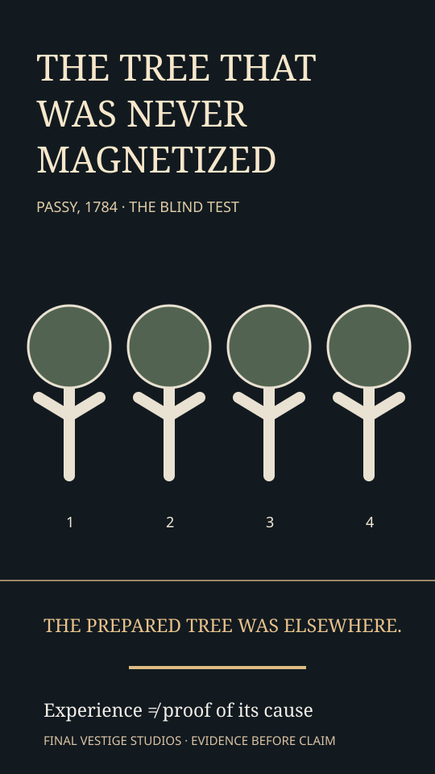

THE MIND & PERCEPTION ARCHIVE · TOOLS UNDER REVIEW
That is a reasonable thing to want. The answer deserves more than a promise about brainwaves.
Independent buying guide · No firsthand product testing · All merchant benefits and package details identified as seller descriptions
After a demanding day, even a brief period of quiet can feel difficult to arrange. The clock is moving; your attention is moving faster. An audio session might be a useful structure for sitting down and beginning. But structure, comfort and scientifically established treatment effects are different claims.
In 1784, a boy in Benjamin Franklin's orchard experienced powerful symptoms near a tree that had never received the treatment he expected. The commissioners' account does not prove modern meditation audio ineffective. It illustrates a useful buying question: does a product's promised mechanism have evidence beyond the experiences people associate with it? Historical report: Franklin commission, 1785 English translation; see the archive article.
Set a timer for twelve minutes. Sit somewhere reasonably comfortable. For the first minute, notice the simple act of breathing. For the next ten, return attention to the breath whenever your mind wanders; do not score the number of times you wander. During the final minute, write down what felt easy, awkward or neutral. Repeating this for several sessions may tell you whether a short routine fits your day. It cannot verify an audio product or diagnose a condition.
Anyone who experiences distress can stop. Meditation and mindfulness research includes reports of unwanted experiences; short sessions are not a substitute for individualized medical or mental-health care.
According to the current public Zen12 offer and About pages, this is a downloadable MP3 meditation-audio program organized into up to twelve progressive levels. Each advertised level has four sound-style choices: guided meditation, relaxation music, sounds of nature and white noise. The seller describes each session as twelve minutes. The product proposition is convenient session structure and a selection of downloadable audio styles—not a service with live personal instruction.
| Edition | Advertised levels | Advertised MP3s | Main decision |
|---|---|---|---|
| Beginner | First six | 24 | For someone who does not want the entire library. |
| Premium | All twelve | 48 | For someone who values all advertised levels and choice. |
| Advanced | Final six | 24 | Described for listeners who already have meditation experience. |
Seller advertising additionally lists user materials, support and a one-year refund representation. These are contractual or service claims that must be checked against the applicable checkout terms. They are not a guarantee from Final Vestige.
The Zen12 seller advertises an equivalence between twelve minutes with its audio and an hour of meditation. The materials reviewed do not provide an independent Zen12-specific controlled trial establishing that equivalence. Studies of meditation practices in general cannot be imported as evidence for a named audio product.
Likewise, studies of binaural beats and EEG outcomes investigate different stimuli and measurement protocols. A 2023 systematic review reported mixed or inconsistent findings across fourteen studies; it was not a trial of Zen12. A pleasant or absorbing listening experience is possible without proving a particular brainwave mechanism.
The US National Center for Complementary and Integrative Health summarizes research showing that some meditation approaches may be helpful for some outcomes while studies vary in quality and methods. It also notes evidence of negative experiences in a minority of participants. Nothing in that guidance independently validates Zen12's marketing claims or guarantees that a buyer will respond in a particular way.
You want a library of short downloadable audio sessions, you prefer having multiple background and guided styles, and a purchase would remain worthwhile to you even without the seller's broad brainwave and time-equivalence promises.
You need proof of specific clinical improvements, are concerned about a checkout's personal-data requests, want verified product-specific neurological outcomes, or would be dissatisfied without the advertised equivalence to longer meditation. A free timer, silence, the existing Seven Day Focus Fieldbook, or noncommercial guided practice may better fit your needs.
What package and total price does the final checkout actually show? Are taxes or ongoing charges displayed? What refund conditions and deadlines legally apply? Are the MP3s downloadable and playable on the devices you use? Does the purchase require a phone number, and what happens to that data? What support is actually included? None of these should be assumed from a landing-page slogan or a frozen screenshot.
Zen12 offers an intelligible format: brief sessions, multiple audio styles, and progressively described levels. Whether those features justify its cost depends on your preferences and verified terms. The reviewed evidence does not establish that Zen12 delivers an hour's meditation in twelve minutes, controls brainwaves in the way its advertising implies, treats anxiety or other conditions, or produces guaranteed personal or financial outcomes.
Our advice is to try a no-cost twelve-minute routine first. If you still want a structured downloadable library, compare the actual offer terms rather than purchasing for an unproven mechanism.
Continue reading the research separately: Puységur's historical source files and the existing Seven Day Focus Fieldbook. Neither requires a Zen12 purchase.
PURCHASING STATUS · NOT ACTIVE
If you eventually purchase through an approved earning link here, Final Vestige may earn a commission at no additional cost to you. No earning link is active on this draft.
No product link is being provided because partner acceptance, link permissions and checkout terms have not been verified. This section is a source-controlled prototype, not a live recommendation.
OPTIONAL 40-SECOND EVIDENCE FILM · NOT YET HOSTED
The film below is a production concept and original still, not an available player. No playback is offered until a first-party hosted MP4, synchronized captions and a genuine keyboard-accessible control have passed review.

0–7 seconds: In 1784, a boy stood blindfolded in a garden near Paris.
7–14 seconds: One apricot tree had been prepared by a practitioner of animal magnetism.
14–21 seconds: The boy approached four other trees. His symptoms grew stronger.
21–28 seconds: At the fourth, he fainted. That tree had not been magnetized.
28–34 seconds: The commissioners investigated a proposed cause, not whether his distress was real.
34–40 seconds: Before buying a brainwave promise, separate the experience from proof of the mechanism.